산업안전기사 (2003-03-16 기출문제)
1과목: 안전관리론
1. 신규 채용자에 대한 안전 교육 내용이 아닌 것은?
- 관리 감독자의 역할과 임무에 관한 사항
- 안전장치 및 보호구 사용에 관한 사항
- 기계⋅기구의 위험성과 안전 작업 방법에 관한 사항
- 당해설비, 기계 및 기구의 작업 안전점검에 관한 사항
(정답률: 79%)

2. 안전보건 의식고취를 위한 추진방법 중 출근시에 작업을 시작하기 전에 5∼10분 정도의 시간을 내서 회합을 갖는 것은?
- OJT
- OFF JT
- TWT
- TBM
(정답률: 67%)
3. 작업표준의 목적과 관계가 가장 적은 것은?
- 위험요인제거
- 제품의 신뢰도 향상
- 손실요인제거
- 작업효율화
(정답률: 57%)
4. 다음 중 정보의 음성적 의사소통(音聲的 意思疎通)이 더욱 효과적일 때는?
- 주위환경이 소란할 때
- 정보가 어렵고 추상적일 때
- 정보가 정확한 순간을 다룰 때
- 여러 종류의 정보를 동시에 제시할 때
(정답률: 67%)
5. 재해발생의 일반적인 경향과 관계가 가장 적은 것은?
- 작업시간
- 작업숙련도
- 작업강도
- 작업크기
(정답률: 61%)
6. 안전 심리에서 고려되는 가장 중요한 요소는 다음 중 어느 것인가?
- 개성과 사고력
- 지식 정도
- 안전 규칙
- 신체적 조건과 기능
(정답률: 45%)
7. 다음 중 재해 예방을 위한 시정책의 3E로서 적당하지 않은 것은?
- 교육
- 기술
- 에너지
- 독려
(정답률: 65%)
8. 안전교육방법 중 학습자가 이미 설명을 듣거나 시범을 보고 알게 된 지식이나 기능을 강사의 감독 아래 직접적으로 연습해 적용해 보게 하는 교육방법은?
- 모의법
- 실연법
- 시범
- 프로그램 학습법
(정답률: 64%)
9. 안전교육방법 중 동기부여에서 다음의 레빈 법칙 상호함수관계 P는?
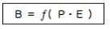
- 개체 : 연령, 경험, 심신상태, 성격, 지능 등
- 인간의 행동
- 심리적 환경
- 인간관계
(정답률: 69%)
10. 인사관리의 중요한 기능요소에 해당되지 않는 것은?(오류 신고가 접수된 문제입니다. 반드시 정답과 해설을 확인하시기 바랍니다.)
- 조직과 리더십
- 기능검사 및 시험
- 배치
- 작업분석
(정답률: 35%)
11. 안전표지의 구성 요소에 해당되지 않는 것은?
- 모양
- 색깔
- 내용
- 크기
(정답률: 62%)
12. 재해빈발성의 원인에 대한 이론이 아닌 것은?
- 기회설
- 암시설
- 재해누설자설
- 재해빈발 경향자설
(정답률: 37%)
13. 다음 중 맥그리거(McGregor)의 인간해석 중 X이론의 관리처방은?
- 경제적 보상체제의 강화
- 직무확장
- 민주적 리더십의 확립
- 분권화와 권한의 위임
(정답률: 51%)
14. 전면형과 반면형의 방진마스크는 사용할 때 충격을 받을 수 있는 부품은 충격시에 마찰 스파크가 발생하여 가연성의 가스 혼합물을 점화시킬 수 있는 재료가 되어서는 안된다. 이에 적합하지 않는 것은?
- 알루미늄
- 마그네슘
- 티타늄
- 철
(정답률: 39%)
15. 도수율이 24.5이고 강도율이 2.15의 사업장이 있다. 한사람의 근로자가 입사하여 퇴직할 때까지는 며칠간의 근로손실 일수를 가져올 수 있는가?
- 2.45일
- 215일
- 2150일
- 2450일
(정답률: 56%)
16. 위험을 제어(control)하는 여러 방안 중 가장 우선적으로 고려되어야 하는 사항은?
- 개인용 보호장비를 지급하여 사용하게 하는 것
- 위험을 줄이기 위하여 개선된 기술과 방법을 도입하는 것
- 위험요소의 제거를 위하여 노력하는 것
- 안전교육을 실시하고 주의사항과 위험표지를 부착하는 것
(정답률: 49%)
17. 안전 조직 중 line staff의 장점을 잘 나타낸 것은?
- 안전 전문가에 의해 입안된 것을 경영자의 지침으로 명령 실시토록 하므로 정확 신속하다.
- 안전 전문가가 안전 계획을 세워 전문적인 문제 해결방안을 모색 대처한다.
- 안전 실시의 지시는 명령계통으로 신속히 전달된다.
- 경영자의 조언과 자문 역할을 한다.
(정답률: 39%)
18. 적성 배치에 있어서 고려되어야 할 기본 사항에 해당되지 않는 것은?
- 적성 검사를 실시하여 개인의 능력을 파악한다.
- 직무 평가를 통하여 자격수준을 정한다.
- 주관적인 감정요소에 따른다.
- 인사관리의 기준 원칙을 고수한다.
(정답률: 72%)
19. 현실적인 성향으로 자신과 타인, 그리고 세계를 편견없이 받아들이는 성향이 강한 사람의 특성에 해당하는 인간욕구는?
- 생리적 욕구
- 사회적 욕구
- 존경과 긍지 욕구
- 자아실현의 욕구
(정답률: 46%)
20. 하인리히 사고방지 5단계에 해당되지 않는 것은?
- 사실의 발견
- 분석
- 시정책 선정
- 평가
(정답률: 41%)
2과목: 인간공학 및 시스템안전공학
21. 소음을 통제하는 일반적인 방법에 해당되지 않는 것은?
- 흡음재 사용
- 차폐장치 사용
- 음향처리제 사용
- 귀마개 및 귀덮개 사용
(정답률: 45%)
22. FTA의 특징과 관계없는 것은?
- 재해의 정량적 예측가능
- 간단한 FT도의 작성으로 정성적 해석 가능
- 컴퓨터 처리가능
- 귀납적 해석가능
(정답률: 45%)
23. 페일세이프(fail safe)의 개념 중 고장시 에너지를 최저화(정지)시키는 개념의 용어는?
- fail-passive
- fail-active
- fail-operational
- fail-negative
(정답률: 40%)
24. 시스템안전관리의 내용에 해당되지 않는 것은?
- 시스템 어프로치
- 안전활동의 조직
- 시스템 안전 프로그램의 해석
- 다른 시스템 프로그램 영역과의 조정
(정답률: 31%)
25. 다음 그림은 무슨 사상을 나타내는가?
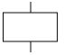
- 결함사상
- 기본사상
- 통상사상
- 생략사상
(정답률: 45%)
26. 청각적 표시장치의 설계시 적용하는 일반원리 중 설명이 옳지 못한 것은?
- 양립성이란 긴급용 신호일 때는 낮은 주파수를 사용한다는 것
- 근사성이란 복잡한 정보를 나타낼 때 2단계의 신호를 보내야 한다는 것
- 분리성이란 두 가지 이상의 채널을 듣고 있다면 각채널의 주파수가 분리되어야 한다는 것
- 검약성이란 조작자에 대한 입력신호는 꼭 필요한 것만을 제공하여야 한다는 것
(정답률: 51%)
27. 고장형태 중 감소형은 어느 고장기간에 나타나는가?
- 초기고장기간
- 우발고장기간
- 마모고장기간
- 피로고장기간
(정답률: 53%)
28. 인간실수의 개인 특성 중 해당되는 항목이 아닌 것은?
- 심신기능
- 건강상태
- 작업부적응성
- 욕구결함
(정답률: 45%)
29. 정신활동의 부담을 측정하는 방법으로 관계가 먼 것은?
- 부정맥 점수
- 점멸 융합 주파수(Flicker Fusion Frequency)
- EMG(Electromyogram)
- J.N.D(Just-Noticeable difference)
(정답률: 33%)
30. 소음 노출로 인한 청력 손실에 관한 내용 중 관계가 먼것은?
- 청력손실은 1000Hz에서 크게 나타난다.
- 청력손실의 정도는 노출 소음수준에 따라 증가한다.
- 약한 소음에 대해서는 노출기간과 청력손실의 관계가 없다.
- 강한 소음에 대해서는 노출기간에 따라 청력손실도 증가한다.
(정답률: 39%)
31. 기계의 정보처리 기능은 다음 중 어느 것인가?
- 귀납적 처리기능
- 연역적 처리기능
- 응용능력적 기능
- 임시응변적 기능
(정답률: 46%)
32. 동작의 합리화를 위한 동작경제의 법칙에서 벗어난 것은?
- 동작을 가급적 조합하여 하나의 동작으로 할 것
- 양손의 동작은 동시에 시작하고, 동시에 끝낼 것
- 동작의 수는 줄이고, 동작의 속도는 적당히 할 것
- 동작의 범위는 최소로 하되, 사용하는 신체의 범위는 크게 할 것
(정답률: 52%)
33. 인간정보처리 과정에서 실패가 일어나는 것이 잘못 연결된 것은?
- 입력에러 - 확인미스
- 매개에러 - 결정미스
- 출력에러 - 동작미스
- 판단에러 - 반응미스
(정답률: 32%)
34. 보행속도에 따라 사람이 소비하는 에너지가 달라진다. 가장 적은 에너지를 사용하는 속도는?
- 50m/분
- 70m/분
- 110m/분
- 150m/분
(정답률: 36%)
35. 다음 그림과 같은 man-machine system에서의 신뢰도를 구하면? (단, man의 신뢰도는 0.70 이고 machine 신뢰도는 0.90 이다.)
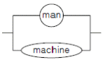
- 0.95
- 0.96
- 0.97
- 0.98
(정답률: 55%)
36. 빛의 반사율이 낮아야 하는 순서를 바르게 배열한 것은?
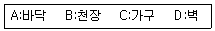
- A >B >C >D
- A >C >D >B
- A >C >B >D
- A >D >C >B
(정답률: 49%)
37. 손이나 특정 신체부위에 발생하는 누적 외상병의 인자와 가장 거리가 먼 것은?
- 무리한 힘
- 반복도가 높은 작업
- 심인성 스트레스
- 잘못 만들어진 공구
(정답률: 59%)
38. 100분 동안 10kcal/min으로 수행되는 삽질 작업을 하는 40세 근로자에게 제공되어야 할 적합한 휴식시간은 얼마인가?
- 58.83분
- 51.77분
- 32.45분
- 10.00분
(정답률: 30%)
39. 인간이 현존하는 기계를 능가하는 조건이 아닌 것은?
- 원칙을 적용하여 다양한 문제를 해결한다.
- 관찰을 통해서 일반화하고 연역적으로 추리한다.
- 주위의 이상하거나 예기치 못한 사건들을 감지한다.
- 어떤 운용방법이 실패할 경우 다른 방법을 선택한다.
(정답률: 35%)
40. FTA 기법의 발생확률 G1값은?
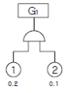
- AND 이므로 0.02이다.
- AND 이므로 0.1이다.
- AND 이므로 0.2이다.
- AND 이므로 0.3이다.
(정답률: 50%)
3과목: 기계위험방지기술
41. 핀클러치 프레스는 사고가 많은 기계이다. 이 기계의 가장 핵심 부분인 클러치 핀의 재질과 표면경도는 다음 중 어떤 것이 가장 적합한가?
- 탄소강 - HRc 45
- 고탄소강 - HRc 55
- 공구강 - HRc 45
- 니켈크롬강 - HRc 55
(정답률: 35%)
42. 2줄 나사의 피치가 0.75mm일 때 이 나사의 리드(lead)는 얼마인가?
- 0.75mm
- 1.5mm
- 3mm
- 3.75mm
(정답률: 48%)
43. 수평거리 20m이고, 높이가 5m인 경우 지게차의 안정도는?
- 20%
- 25%
- 30%
- 35%
(정답률: 56%)
44. 롤러기의 감지식 방호장치는?
- 비상안전스위치
- 비상안전 제어로프장치
- 발광다이오드 광선식 장치
- 연동식 방책
(정답률: 41%)
45. 권상용 와이어로프의 사용제한 사항이 아닌 것은?
- 이음매가 있는 것
- 로프의 한 가닥에서 소선의 수가 7% 정도 절단된 것
- 지름의 감소가 공칭지름의 7%를 초과한 것
- 심하게 변형 또는 부식된 것
(정답률: 50%)
46. 목재 가공용 둥근톱의 송급 쪽에 설치하는 목재 반발 예방 장치는?
- 분할날
- 덮개
- 방호판
- finger
(정답률: 27%)
47. 롤러기의 맞물림점 전방에 12mm 개구 간격을 가진 가드를 설치할 때 맞물림점으로부터 가드까지의 설치 안전거리는?
- 10mm
- 20mm
- 30mm
- 40mm
(정답률: 25%)
48. 기계 설비 재해의 직접 원인 중 불안전 상태로 지적되는 것은?
- 오조작 등 잘못된 동작을 하였다.
- 지정, 용인된 작업방법에 결함이 있다.
- 위험장소에 접근하였다.
- 결정된 안전조치를 이행하지 않았다.
(정답률: 32%)
49. 직경 510mm의 목재가공용 둥근톱에서 반발을 일으키는 부분과 반발방지방호장치 종류 및 설치조건이 바르게 연결된 것은?
- 뒷날-낫형 분할날-톱날과의 간격 12mm이내
- 뒷날-현수형 분할날-톱날후면부 2/3 이상 방호
- 앞날-낫형 분할날-분할날 두께는 톱날두께 1.1배 이상
- 앞날-반발방지발톱-가공면과 간격 8mm이내
(정답률: 28%)
50. 프레스의 안전장치 중 클러치별 방호장치 선택기준에 관한 사항으로 옳은 것은?
- 양수조작식 방호장치의 경우 120SPM 이상, 포지티브클러치에 적용된다.
- 광전자식 방호장치의 경우 120SPM 이상, 포지티브클러치에 적용된다.
- 손쳐내기식 방호장치의 경우는 120SPM 이상, 프릭션클러치에 적용된다.
- 수인식 방호장치의 경우는 120SPM 이상, 프릭션클러치에 적용된다.
(정답률: 30%)
51. 나사의 체결에 있어 약간의 진동이나 하중의 변화에 의해 너트가 풀릴 위험이 있을 때 이를 방지하기 위하여 펀칭이나 타격에 의한 방법으로 안전조치를 하였다. 다음 중 위의 방법이 아닌 것은?
- 분할핀
- 조붙이
- 멈춤쇠
- 멈춤나사
(정답률: 45%)
52. 기계의 구조적 안전화를 위하여 취해야 할 조치는?
- 안전설계
- 안전장치
- 조작의 안전화
- 안전배치
(정답률: 43%)
53. 다음 작업중에서 장갑을 끼고 작업을 해도 좋은 작업은?
- 드릴작업
- 선반작업
- 용접작업
- 밀링작업
(정답률: 60%)
54. 어떤 로프의 최대하중이 600kg이고, 정격하중은100kg이다. 이 때 안전계수는 얼마인가?
- 5
- 6
- 7
- 8
(정답률: 60%)
55. 수격작용과 관련이 없는 것은?
- 관내의 유동
- 밸브의 개폐
- 압력파
- 과열
(정답률: 49%)
56. 밀링머신의 작업 규칙 중 틀린 것은?
- 제품을 따는 데는 손끝을 대지 말 것
- 운전 중 가공면에 손을 대지 말 것
- 주유를 할 때 커터에 운전을 중지할 것
- 장갑을 끼고 작업할 것
(정답률: 59%)
57. 기계의 왕복운동을 하는 운동부와 고정부 사이에 위험이 형성되는 기계의 위험점에 적합한 것은?
- 끼임점(shear point)
- 절단점(cutting point)
- 물림점(nip point)
- 협착점(squeeze point)
(정답률: 48%)
58. 보일러 버너에 방열폭을 설치하는 이유는 다음 중 어느것인가?
- 화염의 검출
- 열화로 인한 폭발의 방지
- 연소의 촉진
- 연료 절약
(정답률: 59%)
59. 인간이 매니플레이터를 움직여서 미리 작업을 수행하므로써 그 작업의 순서, 위치 및 기타의 정보를 기억시켜 이를 재생하므로써 그 작업을 되풀이할 수 있는 매니플레이터는?
- 플레이백로봇
- 수치제어로봇
- 고정시퀸스로봇
- 가변시퀸스로봇
(정답률: 42%)
60. 동력으로 작동되는 기계에 설치해야 할 방호장치 중 동력에 대한 장치가 아닌 것은?
- 동력차단장치
- 클러치
- 벨트 이동장치
- 울
(정답률: 51%)
4과목: 전기위험방지기술
61. 전격의 위험을 가장 잘 설명하고 있는 것은?
- 통전 전류가 크고 주파수가 높고 장시간 흐를수록 위험하다.
- 통전 전압이 높고 주파수가 높고 인체 저항이 낮을수록 위험하다.
- 통전 전류가 크고 장시간 흐르고 인체의 주요한 부분을 흐를수록 위험하다.
- 통전 전류가 크고 인체저항이 낮고 인체의 주요한 부분을 흐를수록 위험하다.
(정답률: 44%)
62. 내화성 물체로 양자의 사이를 격리한 것 외에 고압용또는 특고압용의 개폐기, 차단기, 피뢰기 등으로서 동작시에 아크가 생기는 것은 목재의 벽 또는 천정 기타의 가연성 물체로 부터 고압과 특고압용의 것은 각각 최소 몇 m 이상이격 시켜야 하는가?
- 0.8, 1
- 1, 2
- 2, 3
- 3.5, 4
(정답률: 38%)
63. 작업장내 전기사용 장소에서 단락으로 인한 심한 아아크가 동반되어 화재를 유발하거나 화상 및 감전 재해를 일으키기도 하는데 이와 같은 단락현상이 발생될 수 있는 요인이 되지 않은 것은?
- 절연전선이나 캡타이어 케이블 등 절연피복 손상에 의한 것
- 개폐기의 퓨즈 교환중에 드라이버 끝으로 단자 간을 단락시킬 경우
- 전동기에서 과부하 또는 3상에서 3개의 전선 중 1개가 단락된 상태로 운전함에 따라 과전류가 흘러 소손되는 것
- 전기기기의 가까운 곳에 과전류 차단기 등을 설치 사용할 경우
(정답률: 50%)
64. 비파괴검사 방법 중에 자성체 분말을 뿌려 금속(자성체)파이프 등의 결함을 발견하는 방법이 있다. 이 방법은 어떤 매질상수에 비례하는 성질을 이용한 것인가?
- 도전율
- 투자율
- 유전율
- 저항율
(정답률: 28%)
65. 방폭지역에서 저압케이블 공사시 사용해서는 안되는 케이블은 어느 것인가?
- MI케이블
- 600V 폴리에틸렌 외장케이블(EV, EE, CV, CE)
- 600V 고무 캡타이어케이블
- 연피케이블
(정답률: 32%)
66. 가연성 가스 및 증기용 내압 방폭형 기계ㆍ기구의 너트는 몇 산 이상 물리도록 해야 하는가?
- 3산
- 4산
- 5산
- 6산
(정답률: 42%)
67. 화재가 발생하였을 때 조사해야 하는 내용과 관계없는 것은?
- 발화원
- 착화물
- 출화의 경과
- 응고물
(정답률: 54%)
68. 다음 회로와 같은 송전선로에서 무부하시에 S점에서 3상 단락 사고가 발생하였을 때 3상 단락 전류를 계산하면? (단, 발전기 G1, G2는 각각 15000[kVA], 11[kV], 리액턴스30[%], 변압기 T는 30000[kVA], 11/66[kV], 리액턴스8[%], 송전선 TS간은 50[km], 리액턴스 0.5[Ω/km]이다)
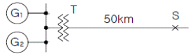
- 450
- 475
- 5⑤
- 525
(정답률: 32%)
69. 제전기의 설명 중 잘못된 것은?
- 전압인가식은 교류 7000[V]를 걸어 방전을 일으켜 발생한 이온으로 대전체의 전하를 중화시킨다.
- 방사선식은 특히 이동물체에 적합하고, α 및 β 선원이 사용되며, 방사선 장해, 취급에 주의를 요하지 않는다.
- 이온식은 방사선의 전리 작용으로 공기를 이온화시키는 방식, 제전 효율은 낮으나 폭발위험지역에 적당하다.
- 자기방전식은 필름의 권취, 셀로판제조, 섬유공장 등에 유효하나, 2[kV]내외의 대전이 남는 결점이 있다.
(정답률: 40%)
70. 전기설비내부에서 발생한 폭발이 설비주변에 존재하는 인화성 물질에 파급되지 않도록 한 구조는?
- 압력방폭구조
- 내압방폭구조
- 안전증방폭구조
- 유입방폭구조
(정답률: 50%)
71. 감전쇼크에 의해 호흡이 정지되었을 경우 몇 분 이내에 응급처치를 개시하면 95%정도를 소생시킬 수 있을까?
- 1분 이내
- 2∼3분 이내
- 3분 이내
- 5분 이내
(정답률: 52%)
72. 목재와 같은 부도체가 탄화로 인해 도전경로가 형성되어 결국 발화하게 되는데 이와 같은 현상은?
- 트래킹 현상
- 가네하라 현상
- 흑화 현상
- 열화 현상
(정답률: 28%)
73. 감전방지용 누전차단기의 정격감도전류 및 동작시간은 얼마인가?
- 30mA, 0.1초
- 30mA, 0.03초
- 50mA, 0.1초
- 50mA, 0.03초
(정답률: 50%)
74. 300[A]의 전류가 흐르는 저압 가공전선로의 한선에서 허용 가능한 누설전류는 얼마인가?
- 0.1[A]
- 0.15[A]
- 1.0[A]
- 1.5[A]
(정답률: 36%)
75. 다음 내용에 알맞은 단어(낱말)를 삽입하여 내용을 보기를 참고하여 완성한 것 중 옳은 것은?
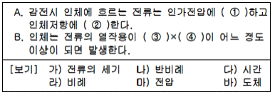
- ①-라, ②-나, ③-가, ④-다
- ①-라, ②-나, ③-마, ④-다
- ①-나, ②-라, ③-마, ④-다
- ①-나, ②-라, ③-가, ④-다
(정답률: 50%)
76. 작업장 내에서 불의의 감전사고가 발생 하였을 때 가장우선적으로 응급조치해야 할 사항 중 잘못된 것은?
- 전격을 받아 실신하였을 때는 즉시 재해자를 병원에 구급조치 해야 한다.
- 우선적으로 재해자를 접촉되어 있는 충전부로부터 분리시킨다.
- 제3자는 즉시 가까운 스위치를 개방하여 전류의 흐름을 중단시킨다.
- 전격에 의해 실신했을 때 그곳에서 즉시 인공호흡을 행하는 것이 급선무이다.
(정답률: 38%)
77. 방폭전기설비를 올바르게 선정하여 균형 있는 방폭능력을 유지하기 위하여 위험장소를 분류하는데 0종 장소란 어떤 조건을 말하는가?
- 이상상태나 통상상태에서 위험분위기를 생성할 우려가 없는 장소
- 이상상태에서 위험분위기를 생성할 우려가 있는 장소
- 통상상태에서 위험분위기가 연속 또는 지속적으로 존재하는 장소
- 수선, 보수 등의 경우 누설되어 폭발성가스가 집적되어 있는 장소
(정답률: 39%)
78. 활선작업용 기구 중에서 충전 중 고압 컷아웃 등을 개폐할 때 아크에 의한 화상의 재해발생을 방지하기위해 사용하는 것은?
- 검전기
- 활선장선기
- 배전선용 후크봉
- 고압활선용 jumper
(정답률: 32%)
79. 다음과 같은 전기설비에서 누전사고가 발생하였을 때 인체가 전기설비의 외함에 접촉하였을 때 인체통과 전류는 몇 mA 인가?
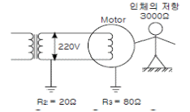
- 40
- 51
- 58
- 60
(정답률: 36%)
80. 물체에 정전기가 대전하면 정전에너지를 갖게 되는데 그 관계식은?
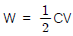
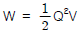
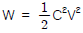
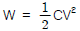
(정답률: 55%)
5과목: 화학설비위험방지기술
81. 일반적인 자동제어 시스템의 작동순서가 바른 것은?
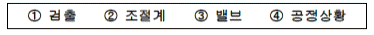
- ①-②-③-④
- ④-①-②-③
- ②-④-①-③
- ②-③-④-①
(정답률: 44%)
82. 대기압하(1.03kg/cm2 )에서 100℃의 물 1kg을 100℃ 수증기로 변화될 때 수증기의 체적팽창으로 외부에 할 수 있는 일을 열에너지로 계산하면 어느 정도인가?(단, 100℃의 포화수의 비체적은 0.00104371m3/kg, 건포화 증기의 비체적은 1.673000m3 /kg이며, 일의 열당량은 1/427kcal/kg⋅m이다.)
- 30kcal
- 40kcal
- 50kcal
- 60kcal
(정답률: 34%)
83. 고압가스 용기의 파열사고의 주요한 원인 중의 하나는 용기의 내압력(耐壓力) 부족이다. 내압력 부족의 원인이 아닌 것은?
- 용기 내벽의 부식
- 강재의 피로
- 과잉 충전
- 용접 불량
(정답률: 53%)
84. 유독물이 눈에 들어간 경우 적절하지 못한 응급처치는?
- 눈꺼풀을 열게 하여 두고, 즉시 눈과 얼굴을 깨끗한 물로 씻어낸다.
- 환자가 안과의사에 의해 검사를 받을 수 있게 될 때까지 세정을 계속한다.
- 점안약이나 기타의 약품을 사용한다.
- 적당한 일반적인 응급처치를 행한다.
(정답률: 45%)
85. 메탄 70vol%, 부탄 30vol% 혼합가스의 공기 중 폭발하한계는? (각물질의 폭발하한계는 Jones식에 의해 추산하시오)
- 1.2 vol%
- 3.2 vol%
- 5.7 vol%
- 7.7 vol%
(정답률: 32%)
86. 방사성 물질이 체내에 들어갈 경우 신체에 미치는 위험도에 대한 다음의 설명 중 옳지 않은 것은?
- 반감기가 길수록 위험성이 크다.
- α 입자를 방출하는 핵종일수록 위험성이 크다.
- 방사선의 에너지가 높을수록 위험성이 크다.
- 체내에 흡수되기 쉽고 잘 배설되지 않는 것 일수록 위험성이 크다.
(정답률: 37%)
87. 화학 공장 회전기기의 누설을 방지하기 위하여 흔히 사용하는 다음 축봉방법(shaft seal)중 인화성 액화가스 또는 유독 유체 취급에 가장 적합한 방법은?
- 메커니컬 실(Mechanical Seal)
- 오일 실(Oil Seal)
- 패킹 그랜드 실(Packing Gland Seal)
- 래비린스 실(Labyrinth Seal)
(정답률: 31%)
88. 이산화탄소 및 할로겐화합물 소화약제의 특징으로서 잘못된 것은?
- 소화속도가 빠르다.
- 전기 절연성이 우수하나, 부식성이 있다.
- 저장에 의한 변질이 없어 장기간 저장이 용이하다.
- 밀폐공간에서는 질식 및 중독의 위험성 때문에 사용이 제한된다.
(정답률: 40%)
89. 보일러의 시동 전 점검사항과 가장 상관이 적은 것은?
- 급수탱크의 수위
- 연료의 상태
- 급수펌프의 운전상태
- 온도계 이상 유무
(정답률: 29%)
90. 화학공장의 공정위험평가기법에서 공정변수(processParameter)와 가이드 워드(guide word)를 사용하여 비정상상태(deviation)가 일어날 수 있는 원인을 찾고 결과를 예측함과 동시에 대책을 세워나가는 방법은?
- FTA(Fault tree analysis)
- HAZOP(Hazard and Operability study)
- ETA(Event tree analysis)
- FMEA(Failure mode and effect analysis)
(정답률: 33%)
91. 유기용제 사용 사업장의 국소배기 장치의 후드 설치상유의할 점 중 틀린 것은?
- 유기용제 증기의 발산원마다 따로 설치할 것
- 외부식 후드는 유기용제 증기 발산원에서 가장 먼 곳에 설치할 것
- 작업방법과 증기발생 상황에 따라 당해 유기용제의 증기를 흡인하기에 적당한 형식과 크기로 할 것
- 가능한 한 국소배기 장치의 닥트길이는 짧게 하고 굴곡부의 수는 적게 한다.
(정답률: 38%)
92. 화학공장에서 많이 사용하고 있는 불연성 가스는?
- 이산화탄소
- 수증기
- 질소
- 아르곤
(정답률: 49%)
93. 열교환기내의 각 장치와 용도(사용목적)가 맞게 연결되어 있는 것은?
- 기화기 - 공급물의 예열
- 증류탑재비기 - 탑저액의 재증발
- 증류탑예열기 - 액화가스의 가열기화
- 증류탑 탑저냉각기 - 탑정증기의 응축
(정답률: 25%)
94. 다음 중 흡입시 인체에 구내염과, 혈뇨, 손떨림 등의 증상을 일으키는 물질은?
- 산소
- 석회석
- 이산화탄소
- 수은
(정답률: 56%)
95. 용기가 폭발에 의하여 파열될 때는 단열팽창이 일어난다. 단열팽창시의 열역학적 관계식이 맞는 것은? (단,
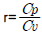
이다.)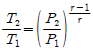
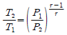
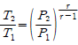
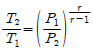
(정답률: 35%)
96. 물반응성 물질 및 인화성 고체 약품을 저장하는 다음의 방법 중 틀린 것은?
- 황린은 물속에 저장
- 나트륨은 석유 속에 저장
- 칼륨은 석유 속에 저장
- 적린은 물속에 저장
(정답률: 37%)
97. 다량의 황산이 인화물과 혼합되어 화재가 발생하였다. 이 소화작업 중 가장 적절치 못한 방법은?
- 회로 덮어 질식소화한다.
- 마른 모래로 덮어 질식소화한다.
- 건조분말로 질식소화한다.
- 물을 뿌려 냉각소화 및 질식소화를 한다.
(정답률: 57%)
98. 가스가 금속에 미치는 영향으로 보아 탄소강의 부품을 사용하여도 좋은 것은?
- 암모니아
- 염화수소
- 산화질소
- 염소
(정답률: 31%)
99. 다음 연소 한계의 설명 중 맞는 것은?
- 연소 하한값은 온도의 증가와 함께 증가한다.
- 연소 상한값은 온도의 증가와 함께 증가한다.
- 연소 하한값은 저온에서는 약간 증가하나 고온에서는 일정하다.
- 연소 한계는 온도에 관계없이 일정하다.
(정답률: 40%)
100. 다음 중 반응 또는 운전압력이 3psig 이상인 경우 압력계를 설치하지 않아도 무관한 것은?
- 반응기
- 탑조류
- 밸브류
- 열교환기
(정답률: 36%)
6과목: 건설안전기술
101. 철근콘크리트 구조물의 해체를 위한 수단이 아닌 것은?
- 철 Hammer
- 팽창제
- Rammer
- Hand Breaker
(정답률: 29%)
102. 건설공사안전관리계획서에 있어 아래의 사항이 포함되어야 할 계획서는?
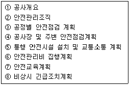
- 안전관리계획서(총괄)
- 공종별 안전관리계획서
- 유해위험방지계획서
- 안전개선계획서
(정답률: 48%)
103. 시멘트의 수화반응에서 생성되는 수산화칼슘은 pH 12~13정도의 알칼리성을 나타내며, 이 수산화칼슘은 대기 중에 있는 약산성의 이산화탄소와 접촉, 반응하여 pH 8~10 정도의 탄산칼슘과 물로 변화하는 현상은?
- 알칼리-골재반응
- 염해
- 동결융해
- 중성화
(정답률: 44%)
104. 크레인에 의한 재해 원인 중 크레인의 설치방법이 나쁘고 규정 이상의 중량물을 적재하였을 경우에 예상되는 재해발생 형태는?
- 낙하재해
- 협착재해
- 감전재해
- 도괴재해
(정답률: 33%)
1⑤. 지반침하 발생원인 중 지하수위 변화로 인하여 발생되는 현상이 아닌 것은?
- 토압에 의한 Heaving
- 지하굴착을 위한 Boring
- 지표수에 의한 Boiling
- 흙막이 벽체 부실의 Piping
(정답률: 27%)
106. 다음 중 다짐용 전압롤러로 점착력이 큰 진흙다짐에 가장 적합한 것은?
- 탬핑롤러
- 타이어롤러
- 진동롤러
- 탠덤롤러
(정답률: 41%)
107. 용접작업을 할 때 전류의 과대 또는 용접봉의 부적당에 의하여 모재가 녹아 용착금속이 채워지지 않고 홈으로 남게 된 부분을 무엇이라 하는가?
- 언더컷(under cut)
- 블로홀(blow hole)
- 피트(pit)
- 크랙(crack)
(정답률: 40%)
108. 비계의작업발판(폭24cm×높이3cm)을 그림과 같이 중앙집중하중 P=200kgf와 자중 w=0.06kgf/cm을 받는 단순보로 가정할 때, 이 작업발판의 안전성에 대한 설명으로 맞는 올바른 것은? (단, 허용휨응력 fba=165kgf/cm2)
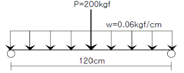
- 최대휨응력이 129.6kgf/cm2로 허용휨응력보다 작아 안전하다.
- 최대휨응력이 149.6kgf/cm2로 허용휨응력보다 작아 안전하다.
- 최대휨응력이 169.6kgf/cm2로 허용휨응력보다 커 불안전하다.
- 최대휨응력이 189.6kgf/cm2로 허용휨응력보다 커 불안전하다.
(정답률: 32%)
109. 철근콘크리트 슬래브 윗면에 철근을 따라 규칙적으로 발생하는 균열은?
- 수축균열
- 경화열에 의한 균열
- 침하균열
- 전단력에 의한 균열
(정답률: 28%)
110. 콘크리트 옹벽의 안정 검토 사항이 아닌 것은?
- 전도에 대한 안정
- 활동에 대한 안정
- 침하에 대한 안정
- 균열에 대한 안정
(정답률: 21%)
111. 인력운반시 같은 중량의 물체일지라도 작업자가 그 물체를 들어올리는 자세에 따라 신체부위에 걸리는 부하가 달라진다. 다음 중 가장 부하가 많이 걸리는 경우는?
- 어깨운반
- 끌어올림
- 양손들음 운반
- 손으로 당김
(정답률: 40%)
112. 흙막이 및 널말뚝의 제거에 관한 설명으로 옳지 않은 것은?
- 흙막이나 널말뚝은 본 공사에 지장이 없도록 제거한다.
- 건축공사에 지장이 없도록 띠장 및 버팀대를 설치한다.
- 흙막이널과 축조물과의 자리에는 버팀, 띠장을 떼어낸 후 흙 또는 모래로 잘 되메우기 한다.
- 흙막이 및 널말뚝을 제거한 다음 구멍은 모래 등으로잘 메운다.
(정답률: 29%)
113. 다음 중 토석붕괴의 외적 요인이 아닌 것은?
- 사면, 법면의 경사 및 구배 증가
- 공사에 의한 진동 및 반복하중의 증가
- 토석의 강도저하
- 지진, 차량, 구조물의 중량
(정답률: 49%)
114. 건설현장에서 안전대는 필수장구이다. 다음 중 안전대의 폐기기준에 해당되지 않는 것은?
- 벨트 부분 끝 또는 폭에 1mm 이상인 손상이 있을 때
- 재봉부분 재봉실이 1개소 이상 절단된 곳이 있을 때
- D링 부분 링이 깊이 1mm 이상 손상이 있을 때
- 후크외측에 깊이 5mm 이상의 손상이 있는 것은 사용 되어서는 안된다.
(정답률: 29%)
115. 양중기를 사용하여 작업할 때 조치사항 중 틀린 것은?
- 양중기 작업자 및 운전자가 기계의 정격하중을 알 수있도록 표시한다.
- 양중기 사용시 일정한 신호방법을 정하여 사용하고 그 내용을 운전자가 보기 쉬운 곳에 부착한다.
- 운전자가 운전 위치를 이탈해서는 안된다.
- 1년 1회 이상 정기적으로 자체검사를 실시한다.
(정답률: 51%)
116. 중량물 취급작업시 작업계획서에 포함시켜야 할 사항이 아닌 것은?
- 충돌위험을 예방할 수 있는 안전대책
- 낙하위험을 예방할 수 있는 안전대책
- 붕괴위험을 예방할 수 있는 안전대책
- 협착위험을 예방할 수 있는 안전대책
(정답률: 27%)
117. 폭우시 옹벽배면의 배수시설이 취약하면 옹벽 저면을 통하여 침투수(seepage)의 수위가 올라간다. 이 침투수가 옹벽의 안정에 미치는 영향으로 틀린 것은?
- 옹벽 배면토의 단위수량 감소로 인한 수직 저항력증가
- 옹벽 바닥면에서의 양압력 증가
- 수평 저항력(수동토압)의 감소
- 포화 또는 부분 포화에 따른 뒷채움용 흙무게의 증가
(정답률: 33%)
118. 수밀 콘크리트에 관한 기술 중 옳지 않은 것은?
- 밀도가 높고 내구적, 방수적이어서 물의 침투를 방지한다.
- 산, 알칼리, 해수 동결 융해에 대한 저항력이 크다.
- 풍화를 방지한다.
- 전류에 영향을 받지 않는다.
(정답률: 45%)
119. 거푸집 지보공 설치시 지반이 충분히 다져지고 정지된 경우 지주의 받침으로 적합한 것은?
- 쐐기
- 말뚝박기
- 콘크리트 타설
- 부목
(정답률: 30%)
120. 콘크리트 타설시 거푸집이 받는 측압에 대한 설명으로 틀린 것은?
- 대기의 온도, 습도가 높을수록 크다.
- 슬럼프(slump)가 클수록 크다.
- 타설속도가 빠를수록 크다.
- 콘크리트의 단위 중량(밀도)이 클수록 크다.
(정답률: 40%)